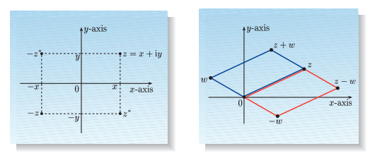
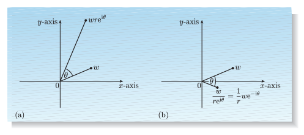

A complex number can be written in the form \[ z = x + iy, \] where \( x, y \in \mathbb{R} \) and \( i \) is a special quantity with the property \( i^2 = -1 \). Complex numbers of the form \( iy \) are called imaginary numbers. Real numbers are also special cases of complex numbers, with y = 0.
Each complex number \( z = x + iy \) has a real part, \( Re(z) = x \), and an imaginary part, \( Im(z) = y \). Two complex numbers \( z \) and \( w \) are equal if, and only if, \( Re(z) = Re(w) \) and \( Im(z) = Im(w) \).
We also define the modulus of a complex number \( z = iy \) to be \[ |z| = \sqrt{ x^2 + y^2 }, \] which is a real, non-negative quantity.
Two complex numbers are added by seperately adding their real and imaginary parts, that is \[ z + w = (x + iy) + ( u + iv) = (x + u) + i(y + v). \]
The distributive and commutative properties (of addition and multiplication) apply to complex numbers, so it follows that multiplication is performed as \[ zw = (x + iy) (u + iv) = (xu - yv) + i(xv + yu). \]
The quotient of any two complex numbers can be found in a similar way \[ \frac{z}{w} = \frac{x + iy}{u + iv} = \frac{x + iy}{u + iv} \frac{u - iv}{u - iv} = \frac{xu + yv}{u^2 + v^2} + i \frac{yu - xv}{u^2 + v^2} \]
The complex conjugate of a complex number \( z = x + iy \) is the complex number z obtained by reversing the sign of i. Thus, \[ z^* = x - iy. \] More generally, the complex conjugate of any expression involving complex numbers is obtained by reversing the sign of i throughout the expression, or equivalently, by replacing each part of the expression by its complex conjugate. This means, for example, that \[ \left( a + \frac{bc}{d} \right) ^* = a^* + \frac{b^*c^*}{d^*}. \] Two successive sign-reversals have no net effect, so we always have \[ (z^*)^* = z. \]
Complex conjugates are useful in finding the real and imaginary parts of complex expressions. Since \[ z = Re(z) + i Im(z) \text{ and } z^* = Re(z) - i Im(z), \] we have \[ Re(z) = \frac{z + z^*}{2} \text{ and } Im(z) = \frac{z - z^*}{2i}. \]
These equations provide useful tests for whether complex expressions are real or imaginary. If an expression \( z \) is real, it has \( Im(z) = 0\), and is characterized by \( z^* = z \). By contrast, an imaginary expression has \( Re(z) = 0 \), and is characterized by \( z^* = -z \).
We also have \[ zz^* = (x + iy)(x - iy) = x^2 + y^2 = |z|^2, \] so the modulus of any complex expression \( z \) is given by \( |z| = \sqrt{zz^*} \).
In geometric terms, the complex number \( x + iy \) is represented by a point with Cartesian coordinates \( (x, y) \), and the plane consisting of all such points is called the complex plane or the Argand diagram. In this plane, the x-axis, which contains only real numbers, is called the real axis, and the y-axis, which contains only imaginary numbers, is called the imaginary axis.
The geometric relationships linking a complex number \( z = x + iy \), its complex conjugate \( z^* \), and the complex numbers \( -z \) and \( -z^* \) are shown in figure below on the left. The operations of adding and subtracting complex numbers can also be visualized geometrically. Two complex numbers \( z \) and \( w \) are represented by the points shown in figure below on the right. Their sum is represented by the point marked \( z + w \) at the corner of the blue parallelogram, while their difference is equal to the sum of \( z \) and \( -w \) and so is represented by the point marked \( z - w \) at the corner of the red parallelogram.
So far, we have specified points in the complex plane by their Cartesian coordinates \( (x, y) \), and the corresponding complex numbers written as \( x + iy \) are then said to be in Cartesian form. However, we can also specify points in the complex plane by the polar coordinates \( r \) and \( \theta \). Anticlockwise rotations increase the value of \( \theta \), while clockwise rotations decrease it. Then, values of \( \theta \) that differ by \( 2 \pi \) are equivalent in that they refer to the same point in the complex plane. We have \[ x = r cos(\theta) \text{ and } y = r sin(\theta), \] so any complex number can be written in the polar form: \[ z = r (cos(\theta) + i sin(\theta)). \]
The radial coordinate is given by \( r = \sqrt{x^2 + y^2} \), which is the modulus of the complex number. The angular coordinate \( \theta \) is called the phase, or sometimes the argument, of the complex number.
There is yet another way of expressing complex numbers, using Euler's Formula: \[ e^{i \theta} = cos(\theta) + i sin(\theta). \]Combining Euler’s formula with the polar form, we see that any complex number can be written in the form \[ z = r e^{i \theta}, \] where \( r \) is the radial coordinate (the modulus) of the complex number, and \( \theta \) is the angular coordinate (the phase). A complex number written in this way is said to be in exponential form.
Although the Cartesian form is useful for adding and subtracting complex numbers, other operations are most easily carried out using the exponential form.
To form the product of two complex numbers, we multiply their moduli andadd their phases: \[ z_1 z_2 = r_1 e^{i \theta_1} r_2 e^{i \theta_2} = r_1 r_2 e^{i \theta_1 + \theta_2}. \]
To form the complex conjugate of a complex number we keep the modulus unchanged and change the sign of the phase: \[ z^* = (r e^{i \theta})^* = r e^{-i \theta} \]
To form the quotient of two complex numbers, we divide their moduli and subtract their phases: \[ \frac{z_1}{z_2} = \frac{r_1 e^{i \theta_1}}{r_2 e^{i \theta_2}} = \frac{r_1}{r_2} e^{i (\theta_1 - \theta_2)}. \]
The figure below on the left shows the geometric effect of multiplying one complex number by another; multiplying \( w \) by \( z = r e^{i \theta} \) causes stretching by a factor of \( r \) and rotation through an angle of \( \theta \). Similarly, the figure below on the right shows the geometric effect of dividing one complex number by another; dividing by \( w \) by \( z = r e^{i \theta} \) causes stretching by a factor of \( 1/r \) and rotation through an angle of \( \theta \).
\[ z^n = (r e^{i \theta})^n = r^n e^{i n \theta} \text{, } n \in \mathbb{Z}. \]